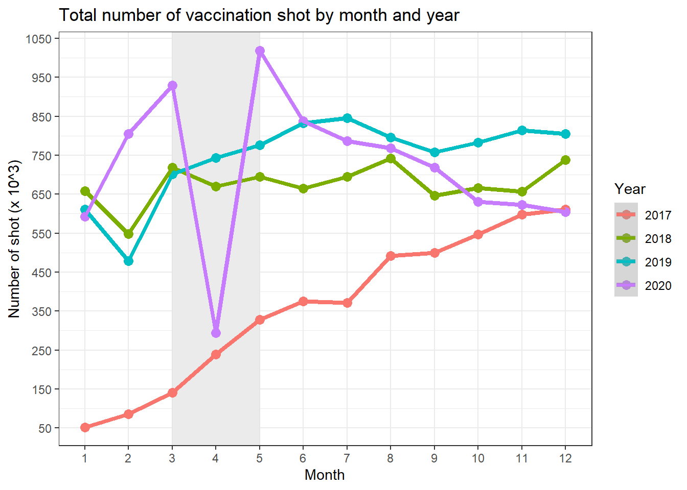
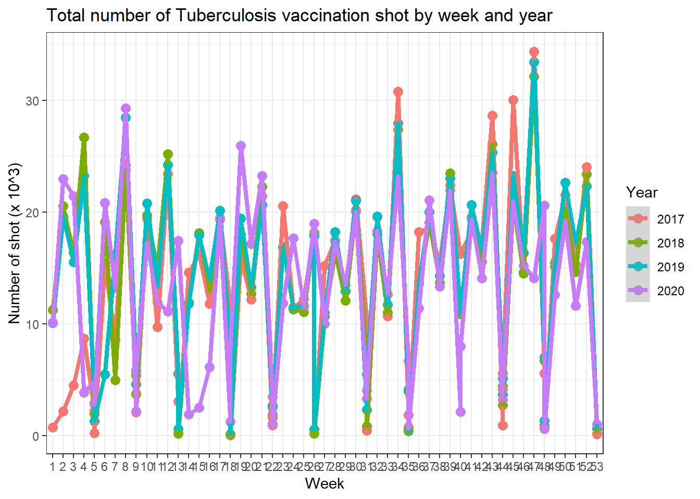
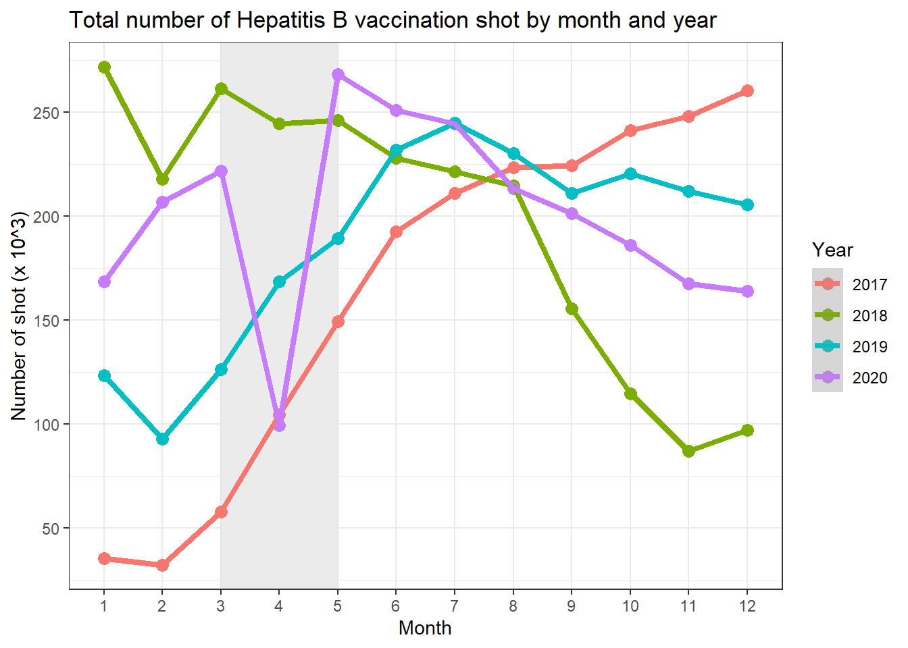

Data Exploration
2020-01-29 (update: 2021-03-17)
Last updated: 2021-03-17
Checks: 6 1
Knit directory: Vaccination_COVID/
This reproducible R Markdown analysis was created with workflowr (version 1.6.2). The Checks tab describes the reproducibility checks that were applied when the results were created. The Past versions tab lists the development history.
The R Markdown file has unstaged changes. To know which version of the R Markdown file created these results, you’ll want to first commit it to the Git repo. If you’re still working on the analysis, you can ignore this warning. When you’re finished, you can run wflow_publish to commit the R Markdown file and build the HTML.
Great job! The global environment was empty. Objects defined in the global environment can affect the analysis in your R Markdown file in unknown ways. For reproduciblity it’s best to always run the code in an empty environment.
The command set.seed(20210126) was run prior to running the code in the R Markdown file. Setting a seed ensures that any results that rely on randomness, e.g. subsampling or permutations, are reproducible.
Great job! Recording the operating system, R version, and package versions is critical for reproducibility.
Nice! There were no cached chunks for this analysis, so you can be confident that you successfully produced the results during this run.
Great job! Using relative paths to the files within your workflowr project makes it easier to run your code on other machines.
Great! You are using Git for version control. Tracking code development and connecting the code version to the results is critical for reproducibility.
The results in this page were generated with repository version c736b3c. See the Past versions tab to see a history of the changes made to the R Markdown and HTML files.
Note that you need to be careful to ensure that all relevant files for the analysis have been committed to Git prior to generating the results (you can use wflow_publish or wflow_git_commit). workflowr only checks the R Markdown file, but you know if there are other scripts or data files that it depends on. Below is the status of the Git repository when the results were generated:
Ignored files:
Ignored: .Rhistory
Ignored: .Rproj.user/
Ignored: analysis/.Rhistory
Untracked files:
Untracked: figures/diptheria_delay_year.png
Untracked: figures/diptheria_delay_year2.png
Untracked: figures/diptheria_week_year.png
Untracked: figures/diptheria_week_year2.png
Untracked: figures/hepatitisb_delay_year.png
Untracked: figures/hepatitisb_delay_year2.png
Untracked: figures/hepatitisb_month_year.png
Untracked: figures/hepatitisb_month_year2.png
Untracked: figures/hepatitisb_week_year.png
Untracked: figures/hepatitisb_week_year2.png
Untracked: figures/measle_delay_year2.png
Untracked: figures/polio_delay_year.png
Untracked: figures/polio_delay_year2.png
Untracked: figures/polio_month_year.png
Untracked: figures/polio_month_year2.png
Untracked: figures/polio_week_year.png
Untracked: figures/polio_week_year2.png
Untracked: figures/tuberclulosis_delay_year.png
Untracked: figures/tuberclulosis_month_year.png
Untracked: figures/tuberclulosis_month_year2.png
Untracked: figures/tuberclulosis_week_year.png
Untracked: figures/tuberclulosis_week_year2.png
Untracked: figures/tuberculosis_delay_year2.png
Unstaged changes:
Modified: analysis/02_data_exploration.Rmd
Note that any generated files, e.g. HTML, png, CSS, etc., are not included in this status report because it is ok for generated content to have uncommitted changes.
These are the previous versions of the repository in which changes were made to the R Markdown (analysis/02_data_exploration.Rmd) and HTML (docs/02_data_exploration.html) files. If you’ve configured a remote Git repository (see ?wflow_git_remote), click on the hyperlinks in the table below to view the files as they were in that past version.
| File | Version | Author | Date | Message |
|---|---|---|---|---|
| Rmd | c736b3c | Duc Du | 2021-03-14 | Update |
| Rmd | d823330 | Duc Du | 2021-03-14 | Update |
| html | d823330 | Duc Du | 2021-03-14 | Update |
| Rmd | 4482a14 | Duc Du Hong | 2021-03-12 | Update |
| html | 4482a14 | Duc Du Hong | 2021-03-12 | Update |
| Rmd | cc79467 | Duc Du Hong | 2021-03-12 | Update |
| html | cc79467 | Duc Du Hong | 2021-03-12 | Update |
| Rmd | c92d4e5 | Duc Du | 2021-03-06 | Update |
| Rmd | bf61658 | Duc Du | 2021-03-06 | Update |
| Rmd | abdc887 | Duc Du | 2021-03-06 | Update |
| Rmd | 1babaea | Duc Du | 2021-03-06 | Update |
| Rmd | 364071a | Duc Du | 2021-03-06 | Update |
| Rmd | 6237e67 | Duc Du | 2021-03-06 | Update 01_data_cleaning 02_data_exploration |
| Rmd | 53c02d0 | Duc Du | 2021-03-03 | Merge branch ‘master’ of https://github.com/oucomo/Vaccination_COVID |
| Rmd | 30f97ba | Duc Du | 2021-03-03 | update |
| html | 30f97ba | Duc Du | 2021-03-03 | update |
| Rmd | 074a0a4 | lampk | 2021-02-19 | correct vacname |
| Rmd | bbd5fae | lampk | 2021-02-19 | update vacname |
| Rmd | 7e5ed9a | Duc Du | 2021-02-03 | Update 20210203 |
| html | 7e5ed9a | Duc Du | 2021-02-03 | Update 20210203 |
| Rmd | e65b780 | lampk | 2021-01-31 | initial description of vaccination |
| html | e65b780 | lampk | 2021-01-31 | initial description of vaccination |
| Rmd | 7faa377 | lampk | 2021-01-31 | put codes for importing & merging data into a separate R script |
| Rmd | 6096f70 | lampk | 2021-01-29 | resolve conflict |
| Rmd | 9e4de01 | lampk | 2021-01-29 | P0406 |
| Rmd | 8d452b3 | lampk | 2021-01-29 | update merge data |
knitr::opts_chunk$set()
library(data.table)
library(tidyverse)-- Attaching packages --------------------------------------- tidyverse 1.3.0 --v ggplot2 3.3.3 v purrr 0.3.4
v tibble 3.0.5 v dplyr 1.0.3
v tidyr 1.1.2 v stringr 1.4.0
v readr 1.4.0 v forcats 0.5.1-- Conflicts ------------------------------------------ tidyverse_conflicts() --
x dplyr::between() masks data.table::between()
x dplyr::filter() masks stats::filter()
x dplyr::first() masks data.table::first()
x dplyr::lag() masks stats::lag()
x dplyr::last() masks data.table::last()
x purrr::transpose() masks data.table::transpose()library(lubridate)
Attaching package: 'lubridate'The following objects are masked from 'package:data.table':
hour, isoweek, mday, minute, month, quarter, second, wday, week,
yday, yearThe following objects are masked from 'package:base':
date, intersect, setdiff, unionlibrary(ggplot2)
library(gt)
library(gtsummary)Quick look at babies
#child <- readRDS(file = file.path("..", "tuann349_vad", "child.rds")) %>% filter(!pid %in% error_datetime$pid & !pid %in% error_duplicate$pid)
#child <- readRDS(file = file.path("..", "tuann349_vad", "child.rds"))
#child$year <- year(child$dob)
#child$month <- month(child$dob)
#child$week <- week(child$dob)
#child_overall <- child[, .N, by = .(year, month)]
#child_overall2 <- child[, .N, by = .(year, month, week)]
#child_province <- child[, .N, by = .(year, month, province)]
#child_province2 <- child[, .N, by = .(year, month, week, province)]
#child_sex <- child[, .N, by = .(year, month, sex)]
#child_sex2 <- child[, .N, by = .(year, month, week, sex)]
#child_province_sex <- child[, .N, by = .(year, month, province, sex)]
#child_province_sex2 <- child[, .N, by = .(year, month, week, province, sex)]
#save(child_overall, child_overall2, child_province, child_province2, child_sex, child_sex2, child_province_sex, child_province_sex2, file = file.path("..", "tuann349_vad", "child.Rdata"))
#tab_child_sum <- tbl_summary(child[year >= 2017 & year <= 2020, .(province, sex, factor(year))])
#save(tab_child_sum, file = file.path("..", "tuann349_vad", "tab_child.Rdata"))Quick look at vaccine shots
#memory.limit(size=60000)
#vaccine_vad <- readRDS(file = file.path("..", "tuann349_vad", "vaccine_vad.rds")) %>% filter(!pid %in% error_datetime$pid & !pid %in% error_duplicate$pid)
#vaccine_vad <- readRDS(file = file.path("..", "tuann349_vad", "vaccine_vad.rds"))
#vaccine_vad$vacweek <- week(vaccine_vad$vacdate)
#vaccine_overall <- vaccine_vad[, .N, by = .(vacyear, vacmonth)]
#vaccine_overall2 <- vaccine_vad[, .N, by = .(vacyear, vacmonth, vacweek)]
#vaccine_province <- vaccine_vad[, .N, by = .(vacyear, vacmonth, province)]
#vaccine_province2 <- vaccine_vad[, .N, by = .(vacyear, vacmonth, vacweek, province)]
#vaccine_vacname <- vaccine_vad[, .N, by = .(vacyear, vacmonth, vacname2)]
#vaccine_vacname2 <- vaccine_vad[, .N, by = .(vacyear, vacmonth, vacweek, vacname2)]
#vaccine_province_vacname <- vaccine_vad[, .N, by = .(vacyear, vacmonth, province, vacname2)]
#vaccine_province_vacname2 <- vaccine_vad[, .N, by = .(vacyear, vacmonth, vacweek, province, vacname2)]
#save(vaccine_overall, vaccine_overall2, vaccine_province, vaccine_province2, vaccine_vacname, vaccine_vacname2, vaccine_province_vacname, vaccine_province_vacname2, file = file.path("..", "tuann349_vad", "vaccine.Rdata"))
#tab_vac_sum <- tbl_summary(vaccine_vad[vacyear >= 2017 & vacyear <= 2020, .(province, vacname2, factor(vacyear))])
#save(tab_vac_sum, file = file.path("..", "tuann349_vad", "tab_vaccine.Rdata"))load(file.path("..", "tuann349_vad", "vaccine.Rdata"))
load(file.path("..", "tuann349_vad", "tab_vaccine.Rdata"))
load(file.path("..", "tuann349_vad", "child.Rdata"))
load(file.path("..", "tuann349_vad", "tab_child.Rdata"))
error_datetime <- read.csv(file.path("..", "tuann349_vad", "error_datetime.csv"))
error_duplicate <- read.csv(file.path("..", "tuann349_vad", "error_duplicate.csv"))Descriptive table
tab_vac_sumWarning: The `.dots` argument of `group_by()` is deprecated as of dplyr 1.0.0.
This warning is displayed once every 8 hours.
Call `lifecycle::last_warnings()` to see where this warning was generated.| Characteristic | N = 29,993,1051 |
|---|---|
| province | |
| Bac Giang | 1,591,808 (5.3%) |
| Bac Kan | 244,880 (0.8%) |
| Bac Ninh | 927,027 (3.1%) |
| Cao Bang | 379,215 (1.3%) |
| Dien Bien | 574,971 (1.9%) |
| Ha Giang | 732,869 (2.4%) |
| Ha Nam | 617,162 (2.1%) |
| Ha Noi | 3,832,491 (13%) |
| Ha Tinh | 1,030,034 (3.4%) |
| Hai Duong | 1,184,588 (3.9%) |
| Hai Phong | 1,143,048 (3.8%) |
| Hoa Binh | 608,148 (2.0%) |
| Hung Yen | 816,231 (2.7%) |
| Lai Chau | 430,268 (1.4%) |
| Lang Son | 607,244 (2.0%) |
| Lao Cai | 604,380 (2.0%) |
| Nam Dinh | 1,342,473 (4.5%) |
| Nghe An | 2,522,912 (8.4%) |
| Ninh Binh | 789,776 (2.6%) |
| Phu Tho | 1,005,937 (3.4%) |
| Quang Ninh | 826,492 (2.8%) |
| Son La | 1,105,531 (3.7%) |
| Thai Binh | 1,186,984 (4.0%) |
| Thai Nguyen | 917,404 (3.1%) |
| Thanh Hoa | 2,791,699 (9.3%) |
| Tuyen Quang | 597,191 (2.0%) |
| Vinh Phuc | 910,584 (3.0%) |
| Yen Bai | 671,758 (2.2%) |
| vacname2 | |
| BCG | 3,214,600 (11%) |
| DPT | 1,137,891 (3.8%) |
| DPT_HepB_Hib | 6,545,043 (22%) |
| HepBN | 2,474,179 (8.2%) |
| IPV | 1,161,812 (3.9%) |
| JEV | 5,083,563 (17%) |
| Measle | 2,182,006 (7.3%) |
| Measle_Rubella | 1,651,176 (5.5%) |
| OPV | 6,541,255 (22%) |
| Td | 243 (<0.1%) |
| Tetanus | 1,337 (<0.1%) |
| V3 | |
| 2017 | 4,336,085 (14%) |
| 2018 | 8,101,547 (27%) |
| 2019 | 8,945,653 (30%) |
| 2020 | 8,609,820 (29%) |
|
1
n (%)
|
|
tab_child_sum| Characteristic | N = 3,527,3191 |
|---|---|
| province | |
| Bac Giang | 177,703 (5.0%) |
| Bac Kan | 23,206 (0.7%) |
| Bac Ninh | 103,927 (2.9%) |
| Cao Bang | 38,608 (1.1%) |
| Dien Bien | 56,592 (1.6%) |
| Ha Giang | 80,226 (2.3%) |
| Ha Nam | 67,132 (1.9%) |
| Ha Noi | 599,603 (17%) |
| Ha Tinh | 118,065 (3.3%) |
| Hai Duong | 145,810 (4.1%) |
| Hai Phong | 162,867 (4.6%) |
| Hoa Binh | 66,244 (1.9%) |
| Hung Yen | 97,996 (2.8%) |
| Lai Chau | 43,036 (1.2%) |
| Lang Son | 61,396 (1.7%) |
| Lao Cai | 68,034 (1.9%) |
| Nam Dinh | 147,049 (4.2%) |
| Nghe An | 315,546 (8.9%) |
| Ninh Binh | 88,278 (2.5%) |
| Phu Tho | 102,530 (2.9%) |
| Quang Ninh | 96,240 (2.7%) |
| Son La | 100,688 (2.9%) |
| Thai Binh | 134,790 (3.8%) |
| Thai Nguyen | 96,256 (2.7%) |
| Thanh Hoa | 305,264 (8.7%) |
| Tuyen Quang | 67,011 (1.9%) |
| Vinh Phuc | 97,303 (2.8%) |
| Yen Bai | 65,919 (1.9%) |
| sex | |
| 0 | 1,851,797 (52%) |
| 1 | 1,675,344 (47%) |
| 2 | 178 (<0.1%) |
| V3 | |
| 2017 | 923,941 (26%) |
| 2018 | 881,926 (25%) |
| 2019 | 915,119 (26%) |
| 2020 | 806,333 (23%) |
|
1
n (%)
|
|
Overall
ggplot(data = child_overall[year >= 2017 & year <= 2020], aes(x = factor(month), y = N/1000, color = factor(year))) +
geom_rect(aes(xmin = 3, xmax = 5, ymin = -Inf, ymax = Inf), fill = "grey90", color = "grey90", alpha = 0.015) +
geom_point(size = 3) +
geom_line(aes(group = year), size = 1.5) +
scale_x_discrete(name = "Month") +
scale_y_continuous(name = "Number of babies born (x 10^3)", breaks = seq(from = 50, to = 100, by = 10)) +
scale_color_discrete(name = "Year") +
theme_bw() +
ggtitle("Total number of babies born by month and year")
#ggsave(filename = file.path("..", "figures", "vaccine_month_year.png"), width = 7, height = 5)ggplot(child_overall[year >= 2017 & year <= 2020], aes(month, N/1000, color = factor(year))) +
geom_point(size=3) +
geom_line(aes(group=year)) +
geom_smooth () +
facet_wrap(~ year) +
stat_smooth(method="loess", formula = y ~ x, colour="blue", size=1) +
scale_x_discrete(name = "Month") +
scale_y_continuous(name = "Number of babies born (x 10^3)", breaks = seq(from = 50, to = 100, by = 10)) +
scale_color_discrete(name = "Year") +
theme_bw() +
ggtitle("Total number of babies born by month and year")`geom_smooth()` using method = 'loess' and formula 'y ~ x'
#ggsave(filename = file.path("figures", "child_month_year2.png"), width = 7, height = 5)ggplot(data = child_overall2[year >= 2017 & year <= 2020], aes(x = factor(week), y = N/1000, color = factor(year))) +
geom_rect(aes(xmin = 3, xmax = 5, ymin = -Inf, ymax = Inf), fill = "grey90", color = "grey90", alpha = 0.015) +
geom_point(size = 3) +
geom_line(aes(group = year), size = 1.5) +
stat_smooth(method="loess", colour="blue", size=1.5) +
scale_x_discrete(name = "Week") +
scale_y_continuous(name = "Number of babies born (x 10^3)", breaks = seq(from = 0, to = 25, by = 5)) +
scale_color_discrete(name = "Year") +
theme_bw() +
ggtitle("Total number of babies born by week and year")`geom_smooth()` using formula 'y ~ x'
#ggsave(filename = file.path("figures", "child_week_year.png"), width = 7, height = 5)ggplot(child_overall2[year >= 2017 & year <= 2020], aes(week, N/1000, color = factor(year))) +
geom_point(size=3) +
geom_line(aes(group=year)) +
geom_smooth () +
stat_smooth(method="loess", formula = y ~ x, colour="blue", size=1) +
scale_x_discrete(name = "Week") +
scale_y_continuous(name = "Number of babies born (x 10^3)", breaks = seq(from = 0, to = 25, by = 5)) +
scale_color_discrete(name = "Year") +
theme_bw() +
ggtitle("Total number of babies born by week and year") +
facet_wrap(~ year)`geom_smooth()` using method = 'loess' and formula 'y ~ x'#ggsave(filename = file.path("figures", "child_week_year2.png"), width = 7, height = 5)ggplot(data = vaccine_overall[vacyear >= 2017 & vacyear <= 2020], aes(x = factor(vacmonth), y = N/1000, color = factor(vacyear))) +
geom_rect(aes(xmin = 3, xmax = 5, ymin = -Inf, ymax = Inf), fill = "grey80", color = "grey90", alpha = 0.015) +
geom_point(size = 3) +
geom_line(aes(group = vacyear), size = 1.5) +
scale_x_discrete(name = "Month") +
geom_smooth() +
stat_smooth(method="loess", formula = y ~ x, colour="blue", size=1.5) +
scale_y_continuous(name = "Number of shot (x 10^3)", breaks = seq(from = 50, to = 1100, by = 100)) +
scale_color_discrete(name = "Year") +
theme_bw() +
ggtitle("Total number of vaccination shot by month and year")`geom_smooth()` using method = 'loess' and formula 'y ~ x'
#ggsave(filename = file.path("figures", "vaccine_month_year.png"), width = 7, height = 5)ggplot(vaccine_overall[vacyear >= 2017 & vacyear <= 2020], aes(vacmonth, N/1000, color = factor(vacyear))) +
geom_point(size=3) +
geom_line(aes(group=vacyear)) +
geom_smooth () +
stat_smooth(method="loess", formula = y ~ x, colour="blue", size=1) +
scale_x_discrete(name = "Month") +
scale_y_continuous(name = "Number of shot (x 10^3)", breaks = seq(from = 50, to = 1100, by = 200)) +
scale_color_discrete(name = "Year") +
theme_bw() +
ggtitle("Total number of vaccination shot by month and year") +
facet_wrap(~ vacyear)`geom_smooth()` using method = 'loess' and formula 'y ~ x'
#ggsave(filename = file.path("figures", "vaccine_month_year2.png"), width = 7, height = 5)ggplot(data = vaccine_overall2[vacyear >= 2017 & vacyear <= 2020], aes(x = factor(vacweek), y = N/1000, color = factor(vacyear))) +
#geom_rect(aes(xmin = 3, xmax = 5, ymin = -Inf, ymax = Inf), fill = "grey80", color = "grey90", alpha = 0.015) +
geom_point(size = 3) +
geom_line(aes(group = vacyear), size = 1.5) +
scale_x_discrete(name = "Week") +
scale_y_continuous(name = "Number of shot (x 10^3)", breaks = seq(from = 50, to = 1100, by = 100)) +
scale_color_discrete(name = "Year") +
theme_bw() +
ggtitle("Total number of vaccination shot by week and year")#ggsave(filename = file.path("figures", "vaccine_week_year.png"), width = 7, height = 5)ggplot(vaccine_overall2[vacyear >= 2017 & vacyear <= 2020], aes(vacweek, N/1000, color = factor(vacyear))) +
geom_point(size=3) +
geom_line(aes(group=vacyear)) +
geom_smooth () +
stat_smooth(method="loess", formula = y ~ x, colour="blue", size=1) +
scale_x_discrete(name = "Week") +
scale_y_continuous(name = "Number of shot (x 10^3)", breaks = seq(from = 0, to = 250, by = 50)) +
scale_color_discrete(name = "Year") +
theme_bw() +
ggtitle("Total number of vaccination shot by week and year") +
facet_wrap(~ vacyear)`geom_smooth()` using method = 'loess' and formula 'y ~ x'#ggsave(filename = file.path("figures", "vaccine_week_year2.png"), width = 7, height = 5)By province
ggplot(data = child_province[year >= 2017 & year <= 2020], aes(x = factor(month), y = N/1000, color = factor(year))) +
geom_rect(aes(xmin = 3, xmax = 5, ymin = -Inf, ymax = Inf), fill = "grey90", color = "grey90", alpha = 0.015) +
geom_point() +
geom_line(aes(group = year)) +
scale_x_discrete(name = "Month") +
scale_y_continuous(name = "Number of babies born (x 10^3)") +
scale_color_discrete(name = "Year") +
facet_wrap(~ province, scale = "free_y") +
theme_bw() +
theme(legend.position = "bottom") +
ggtitle("Number of vaccination babies born in each province by month and year")
#ggsave(filename = file.path("figures", "child_province_year.png"), width = 10, height = 7)ggplot(data = vaccine_province[vacyear >= 2017 & vacyear <= 2020], aes(x = factor(vacmonth), y = N/1000, color = factor(vacyear))) +
geom_rect(aes(xmin = 3, xmax = 5, ymin = -Inf, ymax = Inf), fill = "grey80", color = "grey90", alpha = 0.015) +
geom_point() +
geom_line(aes(group = vacyear)) +
scale_x_discrete(name = "Month") +
scale_y_continuous(name = "Number of shot (x 10^3)") +
scale_color_discrete(name = "Year") +
facet_wrap(~ province, scale = "free_y") +
theme_bw() +
theme(legend.position = "bottom") +
ggtitle("Number of vaccination shot in each province by month and year")#ggsave(filename = file.path("figures", "vaccine_province_year.png"), width = 10, height = 7)By vaccine
ggplot(data = vaccine_vacname[vacyear >= 2017 & vacyear <= 2020], aes(x = factor(vacmonth), y = N/1000)) +
geom_rect(aes(xmin = 3, xmax = 5, ymin = -Inf, ymax = Inf), fill = "grey80", color = "grey90", alpha = 0.015) +
geom_point(aes(color = factor(vacyear))) +
geom_line(aes(group = vacyear, color = factor(vacyear))) +
scale_x_discrete(name = "Month") +
scale_y_continuous(name = "Number of shot (x 10^3)") +
scale_color_discrete(name = "Year") +
facet_wrap(~ vacname2, scale = "free_y") +
theme_bw() +
theme(legend.position = "bottom") +
ggtitle("Number of shot of each vaccine by month and year")#ggsave(filename = file.path("figures", "vaccine_month_year_vaccine.png"), width = 10, height = 7)In Cao Bang, Ha Noi and Nghe An by vaccine
ggplot(data = vaccine_province_vacname[vacyear >= 2017 & vacyear <= 2020 & province %in% c("Cao Bang", "Ha Noi", "Nghe An")], aes(x = factor(vacmonth), y = N)) +
geom_rect(aes(xmin = 3, xmax = 5, ymin = -Inf, ymax = Inf), fill = "grey80", color = "grey90", alpha = 0.015) +
geom_point(aes(color = factor(vacname2))) +
geom_line(aes(group = vacname2, color = factor(vacname2))) +
scale_x_discrete(name = "Month") +
scale_y_continuous(name = "Number of shot") +
scale_color_discrete(name = "Name of vaccine") +
facet_grid(province ~ vacyear, scale = "free_y") +
theme_bw() +
theme(legend.position = "bottom") +
ggtitle("Number of shot of each vaccine by province and time")#ggsave(filename = file.path("figures", "vaccine_month_year_vaccine_CB_HN_NA.png"), width = 10, height = 7)Measle
measle <- readRDS(file = file.path("..", "tuann349_vad", "measle.rds")) %>% filter(!pid %in% error_datetime$pid & !pid %in% error_duplicate$pid)
measle$vacweek <- week(measle$vacdate)
mea <- measle[, .N, by = .(vacyear, vacmonth)]
mea2 <- measle[, .N, by = .(vacyear, vacmonth, vacweek)]
mea_delay <- measle[, .N, by = .(vacyear, vacmonth, vacdelay, vacname2)]Overall
ggplot(data = mea[vacyear >= 2017 & vacyear <= 2020], aes(x = factor(vacmonth), y = N/1000, color = factor(vacyear))) +
geom_rect(aes(xmin = 3, xmax = 5, ymin = -Inf, ymax = Inf), fill = "grey80", color = "grey90", alpha = 0.015) +
geom_point(size = 3) +
geom_line(aes(group = vacyear), size = 1.5) +
scale_x_discrete(name = "Month") +
geom_smooth() +
stat_smooth(method="loess", formula = y ~ x, colour="blue", size=1.5) +
scale_y_continuous(name = "Number of shot (x 10^3)", breaks = seq(from = 0, to = 200, by = 50)) +
scale_color_discrete(name = "Year") +
theme_bw() +
ggtitle("Total number of Measle vaccination shot by month and year")`geom_smooth()` using method = 'loess' and formula 'y ~ x'
#ggsave(filename = file.path("figures", "measle_month_year.png"), width = 7, height = 5)ggplot(mea[vacyear >= 2017 & vacyear <= 2020], aes(vacmonth, N/1000, color = factor(vacyear))) +
geom_point(size=3) +
geom_line(aes(group=vacyear)) +
geom_smooth () +
stat_smooth(method="loess", formula = y ~ x, colour="blue", size=1) +
scale_x_discrete(name = "Month") +
scale_y_continuous(name = "Number of shot (x 10^3)", breaks = seq(from = 0, to = 200, by = 50)) +
scale_color_discrete(name = "Year") +
theme_bw() +
ggtitle("Total number of Measle vaccination shot by month and year") +
facet_wrap(~ vacyear, scale = "free_y")`geom_smooth()` using method = 'loess' and formula 'y ~ x'#ggsave(filename = file.path("figures", "measle_month_year2.png"), width = 7, height = 5)ggplot(data = mea2[vacyear >= 2017 & vacyear <= 2020], aes(x = factor(vacweek), y = N/1000, color = factor(vacyear))) +
#geom_rect(aes(xmin = 3, xmax = 5, ymin = -Inf, ymax = Inf), fill = "grey80", color = "grey90", alpha = 0.015) +
geom_point(size = 3) +
geom_line(aes(group = vacyear), size = 1.5) +
scale_x_discrete(name = "Week") +
geom_smooth() +
stat_smooth(method="loess", formula = y ~ x, colour="blue", size=1.5) +
scale_y_continuous(name = "Number of shot (x 10^3)", breaks = seq(from = 0, to = 60, by = 10)) +
scale_color_discrete(name = "Year") +
theme_bw() +
ggtitle("Total number of Measle vaccination shot by week and year")`geom_smooth()` using method = 'loess' and formula 'y ~ x'#ggsave(filename = file.path("figures", "measle_week_year.png"), width = 7, height = 5)ggplot(mea2[vacyear >= 2017 & vacyear <= 2020], aes(vacweek, N/1000, color = factor(vacyear))) +
geom_point(size=3) +
geom_line(aes(group=vacyear)) +
geom_smooth () +
stat_smooth(method="loess", formula = y ~ x, colour="blue", size=1) +
scale_x_discrete(name = "Week") +
scale_y_continuous(name = "Number of shot (x 10^3)", breaks = seq(from = 0, to = 60, by = 10)) +
scale_color_discrete(name = "Year") +
theme_bw() +
ggtitle("Total number of vaccination shot by week and year") +
facet_wrap(~ vacyear, scale = "free_y")`geom_smooth()` using method = 'loess' and formula 'y ~ x'
#ggsave(filename = file.path("figures", "measle_week_year2.png"), width = 7, height = 5)Delays in vaccination (months)
library(ggridges)Warning: package 'ggridges' was built under R version 4.0.4ggplot(data = measle[vacyear >= 2017 & vacyear <= 2020], aes(x = vacdelay, y = factor(vacmonth), color = factor(vacyear))) +
geom_density_ridges() +
theme_ridges() +
theme(legend.position = "none") +
facet_grid(vacname2~ vacyear, scale = "free_y") +
labs(y = "Months in year", x="Duration of delays in Measle vaccination (months)") +
scale_color_discrete(name = "Year") +
ggtitle("Delays in Measle vaccination (months) by month and year")Picking joint bandwidth of 1.26Picking joint bandwidth of 0.0775Picking joint bandwidth of 0.0762Picking joint bandwidth of 0.0894Picking joint bandwidth of 3.58Picking joint bandwidth of 0.565Picking joint bandwidth of 0.0971Picking joint bandwidth of 0.0931Warning: Removed 229706 rows containing non-finite values (stat_density_ridges).#ggsave(filename = file.path("figures", "measle_delay_year2.png"), width = 7, height = 5)Check Date of Measle vaccination before schedule
measle_check1 <- measle[vacdelay < 0 & vacname2=="Measle"]
measle_check1$type <- "Date of Measle vaccination before schedule (9th month)"
nrow(measle_check1)[1] 28647nrow(measle)[1] 3814265range(measle_check1$vacdate)[1] "2017-01-10" "2020-12-30"table(measle_check1$province)
Bac Giang Bac Kan Bac Ninh Cao Bang Dien Bien Ha Giang
792 56 532 525 1344 2078
Ha Nam Ha Noi Ha Tinh Hai Duong Hai Phong Hoa Binh
477 1686 970 1705 744 391
Hung Yen Lai Chau Lang Son Lao Cai Nam Dinh Nghe An
1165 945 591 740 819 3419
Ninh Binh Phu Tho Quang Ninh Son La Thai Binh Thai Nguyen
354 646 838 1632 1160 513
Thanh Hoa Tuyen Quang Vinh Phuc Yen Bai
2298 795 493 939 head(measle_check1) pid province district commune sex dob vacname vacname2
1: 101010120170032 Ha Noi Ba Dinh Phuc Xa 1 2017-01-18 Soi Measle
2: 101010120170550 Ha Noi Ba Dinh Phuc Xa 0 2017-12-30 Soi Measle
3: 101010120200085 Ha Noi Ba Dinh Phuc Xa 0 2020-04-06 Soi Measle
4: 101010520170015 Ha Noi Ba Dinh Quan Thanh 0 2017-02-18 Soi Measle
5: 101010520170194 Ha Noi Ba Dinh Quan Thanh 0 2017-08-15 Soi Measle
6: 101010720170038 Ha Noi Ba Dinh Truc Bach 1 2017-01-18 Soi Measle
epi tub heb dip per tes hib pol msl rub jev shot start vacdate vacyear
1: 1 0 0 0 0 0 0 0 1 0 0 1 9 2017-10-05 2017
2: 1 0 0 0 0 0 0 0 1 0 0 1 9 2018-09-05 2018
3: 1 0 0 0 0 0 0 0 1 0 0 1 9 2020-11-11 2020
4: 1 0 0 0 0 0 0 0 1 0 0 1 9 2017-11-05 2017
5: 1 0 0 0 0 0 0 0 1 0 0 1 9 2017-08-15 2017
6: 1 0 0 0 0 0 0 0 1 0 0 1 9 2017-10-05 2017
vacmonth vacage vacdelay vacweek
1: 10 8 -1 40
2: 9 8 -1 36
3: 11 7 -2 46
4: 11 8 -1 45
5: 8 0 -9 33
6: 10 8 -1 40
type
1: Date of Measle vaccination before schedule (9th month)
2: Date of Measle vaccination before schedule (9th month)
3: Date of Measle vaccination before schedule (9th month)
4: Date of Measle vaccination before schedule (9th month)
5: Date of Measle vaccination before schedule (9th month)
6: Date of Measle vaccination before schedule (9th month)#28647/3814265*100 = 0.75%
measle_check2 <- measle[vacdelay < 0 & vacname2=="Measle_Rubella"]
measle_check2$type <- "Date of Measle-Rubella vaccination before schedule (18th month)"
nrow(measle_check2)[1] 122229nrow(measle)[1] 3814265range(measle_check2$vacdate)[1] "2017-01-04" "2020-12-30"table(measle_check2$province)
Bac Giang Bac Kan Bac Ninh Cao Bang Dien Bien Ha Giang
2303 305 13899 1992 3144 4591
Ha Nam Ha Noi Ha Tinh Hai Duong Hai Phong Hoa Binh
675 29774 2708 1335 3080 1649
Hung Yen Lai Chau Lang Son Lao Cai Nam Dinh Nghe An
4707 2287 3200 1589 760 6217
Ninh Binh Phu Tho Quang Ninh Son La Thai Binh Thai Nguyen
445 885 7049 10148 3207 3925
Thanh Hoa Tuyen Quang Vinh Phuc Yen Bai
5546 1163 2457 3189 head(measle_check2) pid province district commune sex dob vacname
1: 101010120170103 Ha Noi Ba Dinh Phuc Xa 1 2017-04-25 MR
2: 101010120170152 Ha Noi Ba Dinh Phuc Xa 0 2017-01-04 MR
3: 101010120170167 Ha Noi Ba Dinh Phuc Xa 0 2017-05-27 MR
4: 101010120170222 Ha Noi Ba Dinh Phuc Xa 0 2017-06-22 MR
5: 101010120170241 Ha Noi Ba Dinh Phuc Xa 0 2017-06-06 MR
6: 101010120170264 Ha Noi Ba Dinh Phuc Xa 1 2017-07-11 MR
vacname2 epi tub heb dip per tes hib pol msl rub jev shot start
1: Measle_Rubella 1 0 0 0 0 0 0 0 1 1 0 1 18
2: Measle_Rubella 1 0 0 0 0 0 0 0 1 1 0 1 18
3: Measle_Rubella 1 0 0 0 0 0 0 0 1 1 0 1 18
4: Measle_Rubella 1 0 0 0 0 0 0 0 1 1 0 1 18
5: Measle_Rubella 1 0 0 0 0 0 0 0 1 1 0 1 18
6: Measle_Rubella 1 0 0 0 0 0 0 0 1 1 0 1 18
vacdate vacyear vacmonth vacage vacdelay vacweek
1: 2018-08-08 2018 8 15 -3 32
2: 2018-05-16 2018 5 16 -2 20
3: 2018-07-11 2018 7 13 -5 28
4: 2018-12-05 2018 12 17 -1 49
5: 2018-12-05 2018 12 17 -1 49
6: 2018-12-03 2018 12 16 -2 49
type
1: Date of Measle-Rubella vaccination before schedule (18th month)
2: Date of Measle-Rubella vaccination before schedule (18th month)
3: Date of Measle-Rubella vaccination before schedule (18th month)
4: Date of Measle-Rubella vaccination before schedule (18th month)
5: Date of Measle-Rubella vaccination before schedule (18th month)
6: Date of Measle-Rubella vaccination before schedule (18th month)#122229/3814265*100 = 3.2%
data_path <- file.path("..", "tuann349_vad")
measle_check <- rbindlist(l = list(measle_check1[, .(pid, province, district, commune, sex, dob, vacname2, vacdate, vacdelay, type)],
measle_check2[, .(pid, province, district, commune, sex, dob, vacname2, vacdate, vacdelay, type)]))
#fwrite(x = measle_check, file = file.path(data_path, "check_measle.csv"))head(measle_check) pid province district commune sex dob vacname2
1: 101010120170032 Ha Noi Ba Dinh Phuc Xa 1 2017-01-18 Measle
2: 101010120170550 Ha Noi Ba Dinh Phuc Xa 0 2017-12-30 Measle
3: 101010120200085 Ha Noi Ba Dinh Phuc Xa 0 2020-04-06 Measle
4: 101010520170015 Ha Noi Ba Dinh Quan Thanh 0 2017-02-18 Measle
5: 101010520170194 Ha Noi Ba Dinh Quan Thanh 0 2017-08-15 Measle
6: 101010720170038 Ha Noi Ba Dinh Truc Bach 1 2017-01-18 Measle
vacdate vacdelay type
1: 2017-10-05 -1 Date of Measle vaccination before schedule (9th month)
2: 2018-09-05 -1 Date of Measle vaccination before schedule (9th month)
3: 2020-11-11 -2 Date of Measle vaccination before schedule (9th month)
4: 2017-11-05 -1 Date of Measle vaccination before schedule (9th month)
5: 2017-08-15 -9 Date of Measle vaccination before schedule (9th month)
6: 2017-10-05 -1 Date of Measle vaccination before schedule (9th month)measle_check %>% select(-pid, -district, -commune, -type) %>% mutate(vacdelay=factor(vacdelay)) %>% tbl_summary(., by=vacname2)Column(s) 'dob', and 'vacdate' omitted from output.
Accepted classes are 'character', 'factor', 'numeric', 'logical', 'integer', or 'difftime'.| Characteristic | Measle, N = 28,6471 | Measle_Rubella, N = 122,2291 |
|---|---|---|
| province | ||
| Bac Giang | 792 (2.8%) | 2,303 (1.9%) |
| Bac Kan | 56 (0.2%) | 305 (0.2%) |
| Bac Ninh | 532 (1.9%) | 13,899 (11%) |
| Cao Bang | 525 (1.8%) | 1,992 (1.6%) |
| Dien Bien | 1,344 (4.7%) | 3,144 (2.6%) |
| Ha Giang | 2,078 (7.3%) | 4,591 (3.8%) |
| Ha Nam | 477 (1.7%) | 675 (0.6%) |
| Ha Noi | 1,686 (5.9%) | 29,774 (24%) |
| Ha Tinh | 970 (3.4%) | 2,708 (2.2%) |
| Hai Duong | 1,705 (6.0%) | 1,335 (1.1%) |
| Hai Phong | 744 (2.6%) | 3,080 (2.5%) |
| Hoa Binh | 391 (1.4%) | 1,649 (1.3%) |
| Hung Yen | 1,165 (4.1%) | 4,707 (3.9%) |
| Lai Chau | 945 (3.3%) | 2,287 (1.9%) |
| Lang Son | 591 (2.1%) | 3,200 (2.6%) |
| Lao Cai | 740 (2.6%) | 1,589 (1.3%) |
| Nam Dinh | 819 (2.9%) | 760 (0.6%) |
| Nghe An | 3,419 (12%) | 6,217 (5.1%) |
| Ninh Binh | 354 (1.2%) | 445 (0.4%) |
| Phu Tho | 646 (2.3%) | 885 (0.7%) |
| Quang Ninh | 838 (2.9%) | 7,049 (5.8%) |
| Son La | 1,632 (5.7%) | 10,148 (8.3%) |
| Thai Binh | 1,160 (4.0%) | 3,207 (2.6%) |
| Thai Nguyen | 513 (1.8%) | 3,925 (3.2%) |
| Thanh Hoa | 2,298 (8.0%) | 5,546 (4.5%) |
| Tuyen Quang | 795 (2.8%) | 1,163 (1.0%) |
| Vinh Phuc | 493 (1.7%) | 2,457 (2.0%) |
| Yen Bai | 939 (3.3%) | 3,189 (2.6%) |
| sex | ||
| 0 | 14,799 (52%) | 64,311 (53%) |
| 1 | 13,848 (48%) | 57,914 (47%) |
| 2 | 0 (0%) | 4 (<0.1%) |
| vacdelay | ||
| -18 | 0 (0%) | 309 (0.3%) |
| -17 | 0 (0%) | 90 (<0.1%) |
| -16 | 0 (0%) | 81 (<0.1%) |
| -15 | 0 (0%) | 81 (<0.1%) |
| -14 | 0 (0%) | 110 (<0.1%) |
| -13 | 0 (0%) | 138 (0.1%) |
| -12 | 0 (0%) | 254 (0.2%) |
| -11 | 0 (0%) | 229 (0.2%) |
| -10 | 0 (0%) | 236 (0.2%) |
| -9 | 197 (0.7%) | 602 (0.5%) |
| -8 | 88 (0.3%) | 479 (0.4%) |
| -7 | 109 (0.4%) | 568 (0.5%) |
| -6 | 119 (0.4%) | 3,624 (3.0%) |
| -5 | 179 (0.6%) | 8,597 (7.0%) |
| -4 | 319 (1.1%) | 18,726 (15%) |
| -3 | 627 (2.2%) | 22,086 (18%) |
| -2 | 1,561 (5.4%) | 23,869 (20%) |
| -1 | 25,448 (89%) | 42,150 (34%) |
|
1
n (%)
|
||
Diptheria
diptheria <- readRDS(file = file.path("..", "tuann349_vad", "diptheria.rds")) %>% filter(!pid %in% error_datetime$pid & !pid %in% error_duplicate$pid)
diptheria$vacweek <- week(diptheria$vacdate)
dip <- diptheria[, .N, by = .(vacyear, vacmonth)]
dip2 <- diptheria[, .N, by = .(vacyear, vacmonth, vacweek)]
dip_delay <- diptheria[, .N, by = .(vacyear, vacmonth, vacdelay, vacname2)]Overall
ggplot(data = dip[vacyear >= 2017 & vacyear <= 2020], aes(x = factor(vacmonth), y = N/1000, color = factor(vacyear))) +
geom_rect(aes(xmin = 3, xmax = 5, ymin = -Inf, ymax = Inf), fill = "grey80", color = "grey90", alpha = 0.015) +
geom_point(size = 3) +
geom_line(aes(group = vacyear), size = 1.5) +
scale_x_discrete(name = "Month") +
geom_smooth() +
stat_smooth(method="loess", formula = y ~ x, colour="blue", size=1.5) +
scale_y_continuous(name = "Number of shot (x 10^3)", breaks = seq(from = 0, to = 200, by = 50)) +
scale_color_discrete(name = "Year") +
theme_bw() +
ggtitle("Total number of Diptheria vaccination shot by month and year")`geom_smooth()` using method = 'loess' and formula 'y ~ x'
#ggsave(filename = file.path("figures", "diptheria_month_year.png"), width = 7, height = 5)ggplot(dip[vacyear >= 2017 & vacyear <= 2020], aes(vacmonth, N/1000, color = factor(vacyear))) +
geom_point(size=3) +
geom_line(aes(group=vacyear)) +
geom_smooth () +
stat_smooth(method="loess", formula = y ~ x, colour="blue", size=1) +
scale_x_discrete(name = "Month") +
scale_y_continuous(name = "Number of shot (x 10^3)", breaks = seq(from = 0, to = 200, by = 50)) +
scale_color_discrete(name = "Year") +
theme_bw() +
ggtitle("Total number of Diptheria vaccination shot by month and year") +
facet_wrap(~ vacyear, scale = "free_y")`geom_smooth()` using method = 'loess' and formula 'y ~ x'#ggsave(filename = file.path("figures", "diptheria_month_year2.png"), width = 7, height = 5)ggplot(data = dip2[vacyear >= 2017 & vacyear <= 2020], aes(x = factor(vacweek), y = N/1000, color = factor(vacyear))) +
#geom_rect(aes(xmin = 3, xmax = 5, ymin = -Inf, ymax = Inf), fill = "grey80", color = "grey90", alpha = 0.015) +
geom_point(size = 3) +
geom_line(aes(group = vacyear), size = 1.5) +
scale_x_discrete(name = "Week") +
geom_smooth() +
stat_smooth(method="loess", formula = y ~ x, colour="blue", size=1.5) +
scale_y_continuous(name = "Number of shot (x 10^3)", breaks = seq(from = 0, to = 100, by = 10)) +
scale_color_discrete(name = "Year") +
theme_bw() +
ggtitle("Total number of Diptheria vaccination shot by week and year")`geom_smooth()` using method = 'loess' and formula 'y ~ x'#ggsave(filename = file.path("figures", "diptheria_week_year.png"), width = 7, height = 5)ggplot(dip2[vacyear >= 2017 & vacyear <= 2020], aes(vacweek, N/1000, color = factor(vacyear))) +
geom_point(size=3) +
geom_line(aes(group=vacyear)) +
geom_smooth () +
stat_smooth(method="loess", formula = y ~ x, colour="blue", size=1) +
scale_x_discrete(name = "Week") +
scale_y_continuous(name = "Number of shot (x 10^3)", breaks = seq(from = 0, to = 100, by = 20)) +
scale_color_discrete(name = "Year") +
theme_bw() +
ggtitle("Total number of Diptheria vaccination shot by week and year") +
facet_wrap(~ vacyear, scale = "free_y")`geom_smooth()` using method = 'loess' and formula 'y ~ x'#ggsave(filename = file.path("figures", "diptheria_week_year2.png"), width = 7, height = 5)Delays in Diptheria vaccination (months)
ggplot(data = diptheria[vacyear >= 2017 & vacyear <= 2020], aes(x = vacdelay, y = factor(vacmonth), color = factor(vacyear))) +
geom_density_ridges() +
theme_ridges() +
theme(legend.position = "none") +
facet_grid(vacname2~ vacyear, scale = "free_y") +
labs(y = "Months in year", x="Duration of delays in Diptheria vaccination (months)") +
scale_color_discrete(name = "Year") +
ggtitle("Delays in Diptheria vaccination (months) by month and year")Picking joint bandwidth of 1.91Picking joint bandwidth of 0.704Picking joint bandwidth of 0.0833Picking joint bandwidth of 0.157Picking joint bandwidth of 0.128Picking joint bandwidth of 0.072Picking joint bandwidth of 0.194Picking joint bandwidth of 0.0802Picking joint bandwidth of NaN
Picking joint bandwidth of NaNPicking joint bandwidth of 3.85Picking joint bandwidth of 10Warning: Removed 214576 rows containing non-finite values (stat_density_ridges).Warning in FUN(X[[i]], ...): no non-missing arguments to max; returning -Inf
Warning in FUN(X[[i]], ...): no non-missing arguments to max; returning -Inf
#ggsave(filename = file.path("figures", "diptheria_delay_year2.png"), width = 7, height = 5)Check Date of Diptheria vaccination before schedule
diptheria_check1 <- diptheria[vacdelay < 0 & vacname2=="DPT"]
diptheria_check1$type <- "Date of DPT vaccination before schedule (18th month)"
nrow(diptheria_check1)[1] 26353nrow(diptheria[vacname2=="DPT"])[1] 1132615range(diptheria_check1$vacdate)[1] "2017-01-05" "2020-12-30"table(diptheria_check1$province)
Bac Giang Bac Kan Bac Ninh Cao Bang Dien Bien Ha Giang
523 36 1080 227 824 1019
Ha Nam Ha Noi Ha Tinh Hai Duong Hai Phong Hoa Binh
292 1262 468 845 947 458
Hung Yen Lai Chau Lang Son Lao Cai Nam Dinh Nghe An
534 986 877 1019 345 2034
Ninh Binh Phu Tho Quang Ninh Son La Thai Binh Thai Nguyen
171 1896 281 1618 472 381
Thanh Hoa Tuyen Quang Vinh Phuc Yen Bai
5107 953 952 746 head(diptheria_check1) pid province district commune sex dob vacname
1: 101010120170465 Ha Noi Hoai Duc Duc Thuong 1 2017-07-05 DPT
2: 101010120190002 Ha Noi Gia Lam Dong Du 1 2019-01-01 DPT
3: 101010320170279 Ha Noi Ba Dinh Nguyen Trung Truc 1 2017-06-29 DPT
4: 101010520180070 Ha Noi Ba Dinh Quan Thanh 0 2018-04-23 DPT
5: 101011120170095 Ha Nam Binh Luc Ngoc Lu 1 2017-04-05 DPT
6: 101011120180319 Ha Noi Cau Giay Dich Vong Hau 1 2018-03-23 DPT
vacname2 epi tub heb dip per tes hib pol msl rub jev shot start vacdate
1: DPT 1 0 0 1 1 1 0 0 0 0 0 1 18 2018-10-01
2: DPT 1 0 0 1 1 1 0 0 0 0 0 1 18 2020-06-17
3: DPT 1 0 0 1 1 1 0 0 0 0 0 1 18 2018-12-19
4: DPT 1 0 0 1 1 1 0 0 0 0 0 1 18 2019-09-28
5: DPT 1 0 0 1 1 1 0 0 0 0 0 1 18 2018-01-16
6: DPT 1 0 0 1 1 1 0 0 0 0 0 1 18 2019-09-17
vacyear vacmonth vacage vacdelay vacweek
1: 2018 10 14 -4 40
2: 2020 6 17 -1 25
3: 2018 12 17 -1 51
4: 2019 9 17 -1 39
5: 2018 1 9 -9 3
6: 2019 9 17 -1 38
type
1: Date of DPT vaccination before schedule (18th month)
2: Date of DPT vaccination before schedule (18th month)
3: Date of DPT vaccination before schedule (18th month)
4: Date of DPT vaccination before schedule (18th month)
5: Date of DPT vaccination before schedule (18th month)
6: Date of DPT vaccination before schedule (18th month)#26353/1132615*100 = 2.33%
diptheria_check2 <- diptheria[vacdelay < 0 & vacname2=="DPT_HepB_Hib"]
diptheria_check2$type <- "Date of DPT-HepB-Hib vaccination before schedule (2th month)"
nrow(diptheria_check2)[1] 46154nrow(diptheria[vacname2=="DPT_HepB_Hib"])[1] 6512205range(diptheria_check2$vacdate)[1] "2017-01-04" "2020-12-30"table(diptheria_check2$province)
Bac Giang Bac Kan Bac Ninh Cao Bang Dien Bien Ha Giang
1978 125 756 959 1395 3304
Ha Nam Ha Noi Ha Tinh Hai Duong Hai Phong Hoa Binh
919 1966 1304 2038 1144 788
Hung Yen Lai Chau Lang Son Lao Cai Nam Dinh Nghe An
1694 1831 1068 1368 1430 5651
Ninh Binh Phu Tho Quang Ninh Son La Thai Binh Thai Nguyen
795 758 1091 2743 2005 1061
Thanh Hoa Tuyen Quang Vinh Phuc Yen Bai
4111 1442 1227 1203 head(diptheria_check2) pid province district commune sex dob
1: 101010120190374 Ha Noi Ba Dinh Phuc Xa 0 2019-10-05
2: 101010320180079 Ha Noi Ba Dinh Nguyen Trung Truc 1 2018-05-02
3: 101010520170015 Ha Noi Ba Dinh Quan Thanh 0 2017-02-18
4: 101010720180123 Ha Noi Ba Dinh Truc Bach 0 2018-09-27
5: 101011120200187 Ha Noi Ba Dinh Kim Ma 0 2020-09-14
6: 101011420170044 Ha Noi Ba Dinh Lieu Giai 0 2017-02-06
vacname vacname2 epi tub heb dip per tes hib pol msl rub jev shot
1: ComBE Five DPT_HepB_Hib 1 0 1 1 1 1 1 0 0 0 0 1
2: Quinvaxem DPT_HepB_Hib 1 0 1 1 1 1 1 0 0 0 0 1
3: Quinvaxem DPT_HepB_Hib 1 0 1 1 1 1 1 0 0 0 0 1
4: ComBE Five DPT_HepB_Hib 1 0 1 1 1 1 1 0 0 0 0 1
5: ComBE Five DPT_HepB_Hib 1 0 1 1 1 1 1 0 0 0 0 1
6: Quinvaxem DPT_HepB_Hib 1 0 1 1 1 1 1 0 0 0 0 1
start vacdate vacyear vacmonth vacage vacdelay vacweek
1: 2 2019-12-04 2019 12 1 -1 49
2: 2 2018-06-06 2018 6 1 -1 23
3: 2 2017-03-05 2017 3 0 -2 10
4: 2 2018-11-06 2018 11 1 -1 45
5: 2 2020-11-03 2020 11 1 -1 44
6: 2 2017-04-04 2017 4 1 -1 14
type
1: Date of DPT-HepB-Hib vaccination before schedule (2th month)
2: Date of DPT-HepB-Hib vaccination before schedule (2th month)
3: Date of DPT-HepB-Hib vaccination before schedule (2th month)
4: Date of DPT-HepB-Hib vaccination before schedule (2th month)
5: Date of DPT-HepB-Hib vaccination before schedule (2th month)
6: Date of DPT-HepB-Hib vaccination before schedule (2th month)#46154/6512205*100 = 0.71%
diptheria_check3 <- diptheria[vacdelay < 0 & vacname2=="Td"]
diptheria_check3$type <- "Date of Td vaccination before schedule (84th month)"
nrow(diptheria_check3)[1] 239nrow(diptheria[vacname2=="Td"])[1] 240range(diptheria_check3$vacdate)[1] "2017-08-25" "2020-12-24"table(diptheria_check3$province)
Bac Giang Bac Ninh Cao Bang Dien Bien Ha Giang Ha Noi
6 2 10 12 13 5
Ha Tinh Hai Duong Hai Phong Hung Yen Lai Chau Lao Cai
2 3 9 2 6 27
Nam Dinh Nghe An Ninh Binh Phu Tho Quang Ninh Son La
1 9 1 5 16 57
Thai Binh Thai Nguyen Thanh Hoa Tuyen Quang Vinh Phuc Yen Bai
6 1 28 7 3 8 head(diptheria_check3) pid province district commune sex dob
1: 101472920190006 Ha Noi My Duc Dai Hung 0 2019-01-10
2: 101472920190075 Ha Noi My Duc Dai Hung 0 2019-07-23
3: 101510520200106 Ha Noi Phu Xuyen Hong Minh 0 2020-12-21
4: 101530120180234 Ha Noi Me Linh Quang Minh 1 2018-08-12
5: 103030920200099 Hai Phong Ngo Quyen Cau Tre 0 2020-05-22
6: 103050520190386 Hai Phong Le Chan Nghia Xa 0 2019-12-15
vacname vacname2 epi tub heb
1: Vac xin uon van bach hau hap phu (Td) (Hop 10 lo 5ml) Td 0 0 0
2: Vac xin uon van bach hau hap phu (Td) (Hop 10 lo 5ml) Td 0 0 0
3: Vac xin uon van bach hau hap phu (Td) (Hop 10 lo 5ml) Td 0 0 0
4: Vac xin uon van bach hau hap phu (Td) (Hop 10 lo 5ml) Td 0 0 0
5: Vac xin uon van bach hau hap phu (Td) (Hop 10 lo 5ml) Td 0 0 0
6: Vac xin uon van bach hau hap phu (Td) (Hop 10 lo 5ml) Td 0 0 0
dip per tes hib pol msl rub jev shot start vacdate vacyear vacmonth
1: 1 0 1 0 0 0 0 0 1 84 2020-08-30 2020 8
2: 1 0 1 0 0 0 0 0 1 84 2020-08-29 2020 8
3: 1 0 1 0 0 0 0 0 1 84 2020-12-21 2020 12
4: 1 0 1 0 0 0 0 0 1 84 2020-12-13 2020 12
5: 1 0 1 0 0 0 0 0 1 84 2020-05-28 2020 5
6: 1 0 1 0 0 0 0 0 1 84 2019-12-15 2019 12
vacage vacdelay vacweek type
1: 19 -65 35 Date of Td vaccination before schedule (84th month)
2: 13 -71 35 Date of Td vaccination before schedule (84th month)
3: 0 -84 51 Date of Td vaccination before schedule (84th month)
4: 28 -56 50 Date of Td vaccination before schedule (84th month)
5: 0 -84 22 Date of Td vaccination before schedule (84th month)
6: 0 -84 50 Date of Td vaccination before schedule (84th month)#239/240*100 = 99.6%
data_path <- file.path("..", "tuann349_vad")
diptheria_check <- rbindlist(l = list(diptheria_check1[, .(pid, province, district, commune, sex, dob, vacname2, vacdate, vacdelay, type)],
diptheria_check2[, .(pid, province, district, commune, sex, dob, vacname2, vacdate, vacdelay, type)],
diptheria_check3[, .(pid, province, district, commune, sex, dob, vacname2, vacdate, vacdelay, type)]))
#fwrite(x = diptheria_check, file = file.path(data_path, "check_diptheria.csv"))head(diptheria_check) pid province district commune sex dob vacname2
1: 101010120170465 Ha Noi Hoai Duc Duc Thuong 1 2017-07-05 DPT
2: 101010120190002 Ha Noi Gia Lam Dong Du 1 2019-01-01 DPT
3: 101010320170279 Ha Noi Ba Dinh Nguyen Trung Truc 1 2017-06-29 DPT
4: 101010520180070 Ha Noi Ba Dinh Quan Thanh 0 2018-04-23 DPT
5: 101011120170095 Ha Nam Binh Luc Ngoc Lu 1 2017-04-05 DPT
6: 101011120180319 Ha Noi Cau Giay Dich Vong Hau 1 2018-03-23 DPT
vacdate vacdelay type
1: 2018-10-01 -4 Date of DPT vaccination before schedule (18th month)
2: 2020-06-17 -1 Date of DPT vaccination before schedule (18th month)
3: 2018-12-19 -1 Date of DPT vaccination before schedule (18th month)
4: 2019-09-28 -1 Date of DPT vaccination before schedule (18th month)
5: 2018-01-16 -9 Date of DPT vaccination before schedule (18th month)
6: 2019-09-17 -1 Date of DPT vaccination before schedule (18th month)diptheria_check %>% select(-pid, -district, -commune, -type) %>% mutate(vacdelay=factor(vacdelay)) %>% tbl_summary(., by=vacname2)Column(s) 'dob', and 'vacdate' omitted from output.
Accepted classes are 'character', 'factor', 'numeric', 'logical', 'integer', or 'difftime'.| Characteristic | DPT, N = 26,3531 | DPT_HepB_Hib, N = 46,1541 | Td, N = 2391 |
|---|---|---|---|
| province | |||
| Bac Giang | 523 (2.0%) | 1,978 (4.3%) | 6 (2.5%) |
| Bac Kan | 36 (0.1%) | 125 (0.3%) | 0 (0%) |
| Bac Ninh | 1,080 (4.1%) | 756 (1.6%) | 2 (0.8%) |
| Cao Bang | 227 (0.9%) | 959 (2.1%) | 10 (4.2%) |
| Dien Bien | 824 (3.1%) | 1,395 (3.0%) | 12 (5.0%) |
| Ha Giang | 1,019 (3.9%) | 3,304 (7.2%) | 13 (5.4%) |
| Ha Nam | 292 (1.1%) | 919 (2.0%) | 0 (0%) |
| Ha Noi | 1,262 (4.8%) | 1,966 (4.3%) | 5 (2.1%) |
| Ha Tinh | 468 (1.8%) | 1,304 (2.8%) | 2 (0.8%) |
| Hai Duong | 845 (3.2%) | 2,038 (4.4%) | 3 (1.3%) |
| Hai Phong | 947 (3.6%) | 1,144 (2.5%) | 9 (3.8%) |
| Hoa Binh | 458 (1.7%) | 788 (1.7%) | 0 (0%) |
| Hung Yen | 534 (2.0%) | 1,694 (3.7%) | 2 (0.8%) |
| Lai Chau | 986 (3.7%) | 1,831 (4.0%) | 6 (2.5%) |
| Lang Son | 877 (3.3%) | 1,068 (2.3%) | 0 (0%) |
| Lao Cai | 1,019 (3.9%) | 1,368 (3.0%) | 27 (11%) |
| Nam Dinh | 345 (1.3%) | 1,430 (3.1%) | 1 (0.4%) |
| Nghe An | 2,034 (7.7%) | 5,651 (12%) | 9 (3.8%) |
| Ninh Binh | 171 (0.6%) | 795 (1.7%) | 1 (0.4%) |
| Phu Tho | 1,896 (7.2%) | 758 (1.6%) | 5 (2.1%) |
| Quang Ninh | 281 (1.1%) | 1,091 (2.4%) | 16 (6.7%) |
| Son La | 1,618 (6.1%) | 2,743 (5.9%) | 57 (24%) |
| Thai Binh | 472 (1.8%) | 2,005 (4.3%) | 6 (2.5%) |
| Thai Nguyen | 381 (1.4%) | 1,061 (2.3%) | 1 (0.4%) |
| Thanh Hoa | 5,107 (19%) | 4,111 (8.9%) | 28 (12%) |
| Tuyen Quang | 953 (3.6%) | 1,442 (3.1%) | 7 (2.9%) |
| Vinh Phuc | 952 (3.6%) | 1,227 (2.7%) | 3 (1.3%) |
| Yen Bai | 746 (2.8%) | 1,203 (2.6%) | 8 (3.3%) |
| sex | |||
| 0 | 13,828 (52%) | 24,006 (52%) | 122 (51%) |
| 1 | 12,524 (48%) | 22,148 (48%) | 117 (49%) |
| 2 | 1 (<0.1%) | 0 (0%) | 0 (0%) |
| vacdelay | |||
| -84 | 0 (0%) | 0 (0%) | 62 (26%) |
| -83 | 0 (0%) | 0 (0%) | 19 (7.9%) |
| -82 | 0 (0%) | 0 (0%) | 8 (3.3%) |
| -81 | 0 (0%) | 0 (0%) | 14 (5.9%) |
| -80 | 0 (0%) | 0 (0%) | 12 (5.0%) |
| -79 | 0 (0%) | 0 (0%) | 12 (5.0%) |
| -78 | 0 (0%) | 0 (0%) | 6 (2.5%) |
| -77 | 0 (0%) | 0 (0%) | 12 (5.0%) |
| -76 | 0 (0%) | 0 (0%) | 5 (2.1%) |
| -75 | 0 (0%) | 0 (0%) | 4 (1.7%) |
| -74 | 0 (0%) | 0 (0%) | 6 (2.5%) |
| -73 | 0 (0%) | 0 (0%) | 2 (0.8%) |
| -72 | 0 (0%) | 0 (0%) | 3 (1.3%) |
| -71 | 0 (0%) | 0 (0%) | 4 (1.7%) |
| -69 | 0 (0%) | 0 (0%) | 1 (0.4%) |
| -68 | 0 (0%) | 0 (0%) | 3 (1.3%) |
| -67 | 0 (0%) | 0 (0%) | 2 (0.8%) |
| -66 | 0 (0%) | 0 (0%) | 7 (2.9%) |
| -65 | 0 (0%) | 0 (0%) | 4 (1.7%) |
| -64 | 0 (0%) | 0 (0%) | 5 (2.1%) |
| -63 | 0 (0%) | 0 (0%) | 4 (1.7%) |
| -61 | 0 (0%) | 0 (0%) | 3 (1.3%) |
| -60 | 0 (0%) | 0 (0%) | 4 (1.7%) |
| -59 | 0 (0%) | 0 (0%) | 5 (2.1%) |
| -58 | 0 (0%) | 0 (0%) | 4 (1.7%) |
| -57 | 0 (0%) | 0 (0%) | 3 (1.3%) |
| -56 | 0 (0%) | 0 (0%) | 3 (1.3%) |
| -55 | 0 (0%) | 0 (0%) | 3 (1.3%) |
| -54 | 0 (0%) | 0 (0%) | 2 (0.8%) |
| -52 | 0 (0%) | 0 (0%) | 1 (0.4%) |
| -51 | 0 (0%) | 0 (0%) | 2 (0.8%) |
| -50 | 0 (0%) | 0 (0%) | 6 (2.5%) |
| -49 | 0 (0%) | 0 (0%) | 1 (0.4%) |
| -48 | 0 (0%) | 0 (0%) | 4 (1.7%) |
| -45 | 0 (0%) | 0 (0%) | 1 (0.4%) |
| -44 | 0 (0%) | 0 (0%) | 1 (0.4%) |
| -37 | 0 (0%) | 0 (0%) | 1 (0.4%) |
| -18 | 51 (0.2%) | 0 (0%) | 0 (0%) |
| -17 | 35 (0.1%) | 0 (0%) | 0 (0%) |
| -16 | 111 (0.4%) | 0 (0%) | 0 (0%) |
| -15 | 89 (0.3%) | 0 (0%) | 0 (0%) |
| -14 | 106 (0.4%) | 0 (0%) | 0 (0%) |
| -13 | 113 (0.4%) | 0 (0%) | 0 (0%) |
| -12 | 257 (1.0%) | 0 (0%) | 0 (0%) |
| -11 | 221 (0.8%) | 0 (0%) | 0 (0%) |
| -10 | 181 (0.7%) | 0 (0%) | 0 (0%) |
| -9 | 251 (1.0%) | 0 (0%) | 0 (0%) |
| -8 | 262 (1.0%) | 0 (0%) | 0 (0%) |
| -7 | 454 (1.7%) | 0 (0%) | 0 (0%) |
| -6 | 3,144 (12%) | 0 (0%) | 0 (0%) |
| -5 | 2,846 (11%) | 0 (0%) | 0 (0%) |
| -4 | 2,013 (7.6%) | 0 (0%) | 0 (0%) |
| -3 | 1,537 (5.8%) | 6 (<0.1%) | 0 (0%) |
| -2 | 1,870 (7.1%) | 1,509 (3.3%) | 0 (0%) |
| -1 | 12,812 (49%) | 44,639 (97%) | 0 (0%) |
|
1
n (%)
|
|||
Tuberculosis
tuberculosis <- readRDS(file = file.path("..", "tuann349_vad", "tuberculosis.rds")) %>% filter(!pid %in% error_datetime$pid & !pid %in% error_duplicate$pid)
tuberculosis$vacweek <- week(tuberculosis$vacdate)
tub <- tuberculosis[, .N, by = .(vacyear, vacmonth)]
tub2 <- tuberculosis[, .N, by = .(vacyear, vacmonth, vacweek)]
tub_delay <- tuberculosis[, .N, by = .(vacyear, vacmonth, vacdelay, vacname2)]Overall
ggplot(data = tub[vacyear >= 2017 & vacyear <= 2020], aes(x = factor(vacmonth), y = N/1000, color = factor(vacyear))) +
geom_rect(aes(xmin = 3, xmax = 5, ymin = -Inf, ymax = Inf), fill = "grey80", color = "grey90", alpha = 0.015) +
geom_point(size = 3) +
geom_line(aes(group = vacyear), size = 1.5) +
scale_x_discrete(name = "Month") +
geom_smooth() +
stat_smooth(method="loess", formula = y ~ x, colour="blue", size=1.5) +
scale_y_continuous(name = "Number of shot (x 10^3)", breaks = seq(from = 0, to = 200, by = 50)) +
scale_color_discrete(name = "Year") +
theme_bw() +
ggtitle("Total number of Tuberculosis vaccination shot by month and year")`geom_smooth()` using method = 'loess' and formula 'y ~ x'#ggsave(filename = file.path("figures", "tuberclulosis_month_year.png"), width = 7, height = 5)ggplot(tub[vacyear >= 2017 & vacyear <= 2020], aes(vacmonth, N/1000, color = factor(vacyear))) +
geom_point(size=3) +
geom_line(aes(group=vacyear)) +
geom_smooth () +
stat_smooth(method="loess", formula = y ~ x, colour="blue", size=1) +
scale_x_discrete(name = "Month") +
scale_y_continuous(name = "Number of shot (x 10^3)", breaks = seq(from = 0, to = 200, by = 50)) +
scale_color_discrete(name = "Year") +
theme_bw() +
ggtitle("Total number of Tuberculosis vaccination shot by month and year") +
facet_wrap(~ vacyear, scale = "free_y")`geom_smooth()` using method = 'loess' and formula 'y ~ x'#ggsave(filename = file.path("figures", "tuberclulosis_month_year2.png"), width = 7, height = 5)ggplot(data = tub2[vacyear >= 2017 & vacyear <= 2020], aes(x = factor(vacweek), y = N/1000, color = factor(vacyear))) +
#geom_rect(aes(xmin = 3, xmax = 5, ymin = -Inf, ymax = Inf), fill = "grey80", color = "grey90", alpha = 0.015) +
geom_point(size = 3) +
geom_line(aes(group = vacyear), size = 1.5) +
scale_x_discrete(name = "Week") +
geom_smooth() +
stat_smooth(method="loess", formula = y ~ x, colour="blue", size=1.5) +
scale_y_continuous(name = "Number of shot (x 10^3)", breaks = seq(from = 0, to = 60, by = 10)) +
scale_color_discrete(name = "Year") +
theme_bw() +
ggtitle("Total number of Tuberculosis vaccination shot by week and year")`geom_smooth()` using method = 'loess' and formula 'y ~ x'
#ggsave(filename = file.path("figures", "tuberclulosis_week_year.png"), width = 7, height = 5)ggplot(tub2[vacyear >= 2017 & vacyear <= 2020], aes(vacweek, N/1000, color = factor(vacyear))) +
geom_point(size=3) +
geom_line(aes(group=vacyear)) +
geom_smooth () +
stat_smooth(method="loess", formula = y ~ x, colour="blue", size=1) +
scale_x_discrete(name = "Week") +
scale_y_continuous(name = "Number of shot (x 10^3)", breaks = seq(from = 0, to = 60, by = 10)) +
scale_color_discrete(name = "Year") +
theme_bw() +
ggtitle("Total number of Tuberculosis vaccination shot by week and year") +
facet_wrap(~ vacyear, scale = "free_y")`geom_smooth()` using method = 'loess' and formula 'y ~ x'
#ggsave(filename = file.path("figures", "tuberclulosis_week_year2.png"), width = 7, height = 5)Delays in Tuberculosis vaccination (months)
ggplot(data = tuberculosis[vacyear >= 2017 & vacyear <= 2020], aes(x = vacdelay, y = factor(vacmonth), color = factor(vacyear))) +
geom_density_ridges() +
theme_ridges() +
theme(legend.position = "none") +
facet_grid(vacname2~ vacyear, scale = "free_y") +
labs(y = "Months in year", x="Duration of delays in Tuberculosis vaccination (months)") +
scale_color_discrete(name = "Year") +
ggtitle("Delays in Tuberculosis vaccination (months) by month and year")Picking joint bandwidth of 0.0732Picking joint bandwidth of 0.0727Picking joint bandwidth of 0.0724Picking joint bandwidth of 0.0738Warning: Removed 4030 rows containing non-finite values (stat_density_ridges).#ggsave(filename = file.path("figures", "tuberculosis_delay_year2.png"), width = 7, height = 5)Check Date of Tuberculosis vaccination before schedule
tuberculosis_check <- tuberculosis[vacdelay < 0 & vacname2=="BCG"]
tuberculosis_check$type <- "Date of BCG vaccination before schedule (0th month)"
nrow(tuberculosis_check)[1] 0nrow(tuberculosis[vacname2=="BCG"])[1] 3203129range(tuberculosis_check$vacdate)Warning in min.default(structure(numeric(0), class = "Date"), na.rm = FALSE): no
non-missing arguments to min; returning InfWarning in max.default(structure(numeric(0), class = "Date"), na.rm = FALSE): no
non-missing arguments to max; returning -Inf[1] NA NAtable(tuberculosis_check$province)< table of extent 0 >head(tuberculosis_check)Empty data.table (0 rows and 28 cols): pid,province,district,commune,sex,dob...#0/3203129*100 = 0%Hepatitis B
hepatitisb <- readRDS(file = file.path("..", "tuann349_vad", "hepatitisb.rds")) %>% filter(!pid %in% error_datetime$pid & !pid %in% error_duplicate$pid)
hepatitisb$vacweek <- week(hepatitisb$vacdate)
hep <- hepatitisb[, .N, by = .(vacyear, vacmonth)]
hep2 <- hepatitisb[, .N, by = .(vacyear, vacmonth, vacweek)]
hep_delay <- hepatitisb[, .N, by = .(vacyear, vacmonth, vacdelay, vacname2)]Overall
ggplot(data = hep[vacyear >= 2017 & vacyear <= 2020], aes(x = factor(vacmonth), y = N/1000, color = factor(vacyear))) +
geom_rect(aes(xmin = 3, xmax = 5, ymin = -Inf, ymax = Inf), fill = "grey80", color = "grey90", alpha = 0.015) +
geom_point(size = 3) +
geom_line(aes(group = vacyear), size = 1.5) +
scale_x_discrete(name = "Month") +
geom_smooth() +
stat_smooth(method="loess", formula = y ~ x, colour="blue", size=1.5) +
scale_y_continuous(name = "Number of shot (x 10^3)", breaks = seq(from = 0, to = 300, by = 50)) +
scale_color_discrete(name = "Year") +
theme_bw() +
ggtitle("Total number of Hepatitis B vaccination shot by month and year")`geom_smooth()` using method = 'loess' and formula 'y ~ x'
#ggsave(filename = file.path("figures", "hepatitisb_month_year.png"), width = 7, height = 5)ggplot(hep[vacyear >= 2017 & vacyear <= 2020], aes(vacmonth, N/1000, color = factor(vacyear))) +
geom_point(size=3) +
geom_line(aes(group=vacyear)) +
geom_smooth () +
stat_smooth(method="loess", formula = y ~ x, colour="blue", size=1) +
scale_x_discrete(name = "Month") +
scale_y_continuous(name = "Number of shot (x 10^3)", breaks = seq(from = 0, to = 300, by = 50)) +
scale_color_discrete(name = "Year") +
theme_bw() +
ggtitle("Total number of Hepatitis B vaccination shot by month and year") +
facet_wrap(~ vacyear, scale = "free_y")`geom_smooth()` using method = 'loess' and formula 'y ~ x'
#ggsave(filename = file.path("figures", "hepatitisb_month_year2.png"), width = 7, height = 5)ggplot(data = hep2[vacyear >= 2017 & vacyear <= 2020], aes(x = factor(vacweek), y = N/1000, color = factor(vacyear))) +
#geom_rect(aes(xmin = 3, xmax = 5, ymin = -Inf, ymax = Inf), fill = "grey80", color = "grey90", alpha = 0.015) +
geom_point(size = 3) +
geom_line(aes(group = vacyear), size = 1.5) +
scale_x_discrete(name = "Week") +
geom_smooth() +
stat_smooth(method="loess", formula = y ~ x, colour="blue", size=1.5) +
scale_y_continuous(name = "Number of shot (x 10^3)", breaks = seq(from = 0, to = 100, by = 10)) +
scale_color_discrete(name = "Year") +
theme_bw() +
ggtitle("Total number of Hepatitis B vaccination shot by week and year")`geom_smooth()` using method = 'loess' and formula 'y ~ x'#ggsave(filename = file.path("figures", "hepatitisb_week_year.png"), width = 7, height = 5)ggplot(hep2[vacyear >= 2017 & vacyear <= 2020], aes(vacweek, N/1000, color = factor(vacyear))) +
geom_point(size=3) +
geom_line(aes(group=vacyear)) +
geom_smooth () +
stat_smooth(method="loess", formula = y ~ x, colour="blue", size=1) +
scale_x_discrete(name = "Week") +
scale_y_continuous(name = "Number of shot (x 10^3)", breaks = seq(from = 0, to = 100, by = 10)) +
scale_color_discrete(name = "Year") +
theme_bw() +
ggtitle("Total number of Hepatitis B vaccination shot by week and year") +
facet_wrap(~ vacyear, scale = "free_y")`geom_smooth()` using method = 'loess' and formula 'y ~ x'#ggsave(filename = file.path("figures", "hepatitisb_week_year2.png"), width = 7, height = 5)Delays in Hepatitis B vaccination (months)
ggplot(data = hepatitisb[vacyear >= 2017 & vacyear <= 2020], aes(x = vacdelay, y = factor(vacmonth), color = factor(vacyear))) +
geom_density_ridges() +
theme_ridges() +
theme(legend.position = "none") +
facet_grid(vacname2~ vacyear, scale = "free_y") +
labs(y = "Months in year", x="Duration of delays in Hepatitis B vaccination (months)") +
scale_color_discrete(name = "Year") +
ggtitle("Delays in Hepatitis B vaccination (months) by month and year")Picking joint bandwidth of 0.128Picking joint bandwidth of 0.072Picking joint bandwidth of 0.194Picking joint bandwidth of 0.0802Picking joint bandwidth of 0.0277Picking joint bandwidth of 0.0442Picking joint bandwidth of 0.14Picking joint bandwidth of 0.126Warning: Removed 231138 rows containing non-finite values (stat_density_ridges).ggsave(filename = file.path("figures", "hepatitisb_delay_year2.png"), width = 7, height = 5)Picking joint bandwidth of 0.128Picking joint bandwidth of 0.072Picking joint bandwidth of 0.194Picking joint bandwidth of 0.0802Picking joint bandwidth of 0.0277Picking joint bandwidth of 0.0442Picking joint bandwidth of 0.14Picking joint bandwidth of 0.126Warning: Removed 231138 rows containing non-finite values (stat_density_ridges).Check Date of Hepatitis B vaccination before schedule
hepatitisb_check <- hepatitisb[vacdelay < 0 & vacname2=="HepBN"]
hepatitisb_check$type <- "Date of HepBN vaccination before schedule (0th month)"
nrow(hepatitisb_check)[1] 0nrow(hepatitisb[vacname2=="HepBN"])[1] 2473433range(hepatitisb_check$vacdate)Warning in min.default(structure(numeric(0), class = "Date"), na.rm = FALSE): no
non-missing arguments to min; returning InfWarning in max.default(structure(numeric(0), class = "Date"), na.rm = FALSE): no
non-missing arguments to max; returning -Inf[1] NA NAtable(hepatitisb_check$province)< table of extent 0 >head(hepatitisb_check)Empty data.table (0 rows and 28 cols): pid,province,district,commune,sex,dob...#0/2473433*100 = 0%Polio
polio <- readRDS(file = file.path("..", "tuann349_vad", "polio.rds")) %>% filter(!pid %in% error_datetime$pid & !pid %in% error_duplicate$pid)
polio$vacweek <- week(polio$vacdate)
pol <- polio[, .N, by = .(vacyear, vacmonth)]
pol2 <- polio[, .N, by = .(vacyear, vacmonth, vacweek)]
pol_delay <- polio[, .N, by = .(vacyear, vacmonth, vacdelay, vacname2)]Overall
ggplot(data = pol[vacyear >= 2017 & vacyear <= 2020], aes(x = factor(vacmonth), y = N/1000, color = factor(vacyear))) +
geom_rect(aes(xmin = 3, xmax = 5, ymin = -Inf, ymax = Inf), fill = "grey80", color = "grey90", alpha = 0.015) +
geom_point(size = 3) +
geom_line(aes(group = vacyear), size = 1.5) +
scale_x_discrete(name = "Month") +
geom_smooth() +
stat_smooth(method="loess", formula = y ~ x, colour="blue", size=1.5) +
scale_y_continuous(name = "Number of shot (x 10^3)", breaks = seq(from = 0, to = 300, by = 50)) +
scale_color_discrete(name = "Year") +
theme_bw() +
ggtitle("Total number of Polio vaccination shot by month and year")`geom_smooth()` using method = 'loess' and formula 'y ~ x'
#ggsave(filename = file.path("figures", "polio_month_year.png"), width = 7, height = 5)ggplot(pol[vacyear >= 2017 & vacyear <= 2020], aes(vacmonth, N/1000, color = factor(vacyear))) +
geom_point(size=3) +
geom_line(aes(group=vacyear)) +
geom_smooth () +
stat_smooth(method="loess", formula = y ~ x, colour="blue", size=1) +
scale_x_discrete(name = "Month") +
scale_y_continuous(name = "Number of shot (x 10^3)", breaks = seq(from = 0, to = 300, by = 50)) +
scale_color_discrete(name = "Year") +
theme_bw() +
ggtitle("Total number of Polio vaccination shot by month and year") +
facet_wrap(~ vacyear, scale = "free_y")`geom_smooth()` using method = 'loess' and formula 'y ~ x'
#ggsave(filename = file.path("figures", "polio_month_year2.png"), width = 7, height = 5)ggplot(data = pol2[vacyear >= 2017 & vacyear <= 2020], aes(x = factor(vacweek), y = N/1000, color = factor(vacyear))) +
#geom_rect(aes(xmin = 3, xmax = 5, ymin = -Inf, ymax = Inf), fill = "grey80", color = "grey90", alpha = 0.015) +
geom_point(size = 3) +
geom_line(aes(group = vacyear), size = 1.5) +
scale_x_discrete(name = "Week") +
geom_smooth() +
stat_smooth(method="loess", formula = y ~ x, colour="blue", size=1.5) +
scale_y_continuous(name = "Number of shot (x 10^3)", breaks = seq(from = 0, to = 100, by = 10)) +
scale_color_discrete(name = "Year") +
theme_bw() +
ggtitle("Total number of Polio vaccination shot by week and year")`geom_smooth()` using method = 'loess' and formula 'y ~ x'#ggsave(filename = file.path("figures", "polio_week_year.png"), width = 7, height = 5)ggplot(pol2[vacyear >= 2017 & vacyear <= 2020], aes(vacweek, N/1000, color = factor(vacyear))) +
geom_point(size=3) +
geom_line(aes(group=vacyear)) +
geom_smooth () +
stat_smooth(method="loess", formula = y ~ x, colour="blue", size=1) +
scale_x_discrete(name = "Week") +
scale_y_continuous(name = "Number of shot (x 10^3)", breaks = seq(from = 0, to = 100, by = 10)) +
scale_color_discrete(name = "Year") +
theme_bw() +
ggtitle("Total number of Polio vaccination shot by week and year") +
facet_wrap(~ vacyear, scale = "free_y")`geom_smooth()` using method = 'loess' and formula 'y ~ x'
#ggsave(filename = file.path("figures", "polio_week_year2.png"), width = 7, height = 5)Delays in Polio vaccination (months)
ggplot(data = polio[vacyear >= 2017 & vacyear <= 2020], aes(x = vacdelay, y = factor(vacmonth), color = factor(vacyear))) +
geom_density_ridges() +
theme_ridges() +
theme(legend.position = "none") +
facet_grid(vacname2~ vacyear, scale = "free_y") +
labs(y = "Months in year", x="Duration of delays in Polio vaccination (months)") +
scale_color_discrete(name = "Year") +
ggtitle("Delays in Polio vaccination (months) by month and year")Picking joint bandwidth of 1.26Picking joint bandwidth of 0.783Picking joint bandwidth of 0.214Picking joint bandwidth of 0.399Picking joint bandwidth of 0.128Picking joint bandwidth of 0.0602Picking joint bandwidth of 0.0963Picking joint bandwidth of 0.0808Warning: Removed 45504 rows containing non-finite values (stat_density_ridges).
#ggsave(filename = file.path("figures", "polio_delay_year2.png"), width = 7, height = 5)Check Date of Polio vaccination before schedule
polio_check1 <- polio[vacdelay < 0 & vacname2=="OPV"]
polio_check1$type <- "Date of OPV vaccination before schedule (2th month)"
nrow(polio_check1)[1] 54191nrow(polio[vacname2=="OPV"])[1] 6508857range(polio_check1$vacdate)[1] "2017-01-05" "2020-12-30"table(polio_check1$province)
Bac Giang Bac Kan Bac Ninh Cao Bang Dien Bien Ha Giang
2093 133 1042 1364 1972 4169
Ha Nam Ha Noi Ha Tinh Hai Duong Hai Phong Hoa Binh
1010 2082 1850 2358 1365 896
Hung Yen Lai Chau Lang Son Lao Cai Nam Dinh Nghe An
1722 2144 1428 1714 1570 6891
Ninh Binh Phu Tho Quang Ninh Son La Thai Binh Thai Nguyen
795 891 1289 2922 2080 1107
Thanh Hoa Tuyen Quang Vinh Phuc Yen Bai
4892 1712 1304 1396 head(polio_check1) pid province district commune sex dob vacname
1: 101010120190374 Ha Noi Ba Dinh Phuc Xa 0 2019-10-05 OPV
2: 101010320180079 Ha Noi Ba Dinh Nguyen Trung Truc 1 2018-05-02 OPV
3: 101010720180123 Ha Noi Ba Dinh Truc Bach 0 2018-09-27 OPV
4: 101011320170377 Ha Noi Ba Dinh Lieu Giai 0 2017-08-12 OPV
5: 101011320170377 Ha Noi Ba Dinh Lieu Giai 0 2017-08-12 OPV
6: 101011320170377 Ha Noi Ba Dinh Lieu Giai 0 2017-08-12 OPV
vacname2 epi tub heb dip per tes hib pol msl rub jev shot start vacdate
1: OPV 1 0 0 0 0 0 0 1 0 0 0 1 2 2019-12-04
2: OPV 1 0 0 0 0 0 0 1 0 0 0 1 2 2018-06-06
3: OPV 1 0 0 0 0 0 0 1 0 0 0 1 2 2018-11-06
4: OPV 1 0 0 0 0 0 0 1 0 0 0 1 2 2017-08-30
5: OPV 1 0 0 0 0 0 0 1 0 0 0 2 3 2017-10-25
6: OPV 1 0 0 0 0 0 0 1 0 0 0 3 4 2017-11-25
vacyear vacmonth vacage vacdelay vacweek
1: 2019 12 1 -1 49
2: 2018 6 1 -1 23
3: 2018 11 1 -1 45
4: 2017 8 0 -2 35
5: 2017 10 2 -1 43
6: 2017 11 3 -1 47
type
1: Date of OPV vaccination before schedule (2th month)
2: Date of OPV vaccination before schedule (2th month)
3: Date of OPV vaccination before schedule (2th month)
4: Date of OPV vaccination before schedule (2th month)
5: Date of OPV vaccination before schedule (2th month)
6: Date of OPV vaccination before schedule (2th month)#54191/6508857*100 = 0.83%
polio_check2 <- polio[vacdelay < 0 & vacname2=="IPV"]
polio_check2$type <- "Date of IPV vaccination before schedule (5th month)"
nrow(polio_check2)[1] 8394nrow(polio[vacname2=="IPV"])[1] 1155541range(polio_check2$vacdate)[1] "2017-02-18" "2020-12-28"table(polio_check2$province)
Bac Giang Bac Kan Bac Ninh Cao Bang Dien Bien Ha Giang
370 11 333 67 641 446
Ha Nam Ha Noi Ha Tinh Hai Duong Hai Phong Hoa Binh
233 328 197 304 209 152
Hung Yen Lai Chau Lang Son Lao Cai Nam Dinh Nghe An
195 202 90 202 320 700
Ninh Binh Phu Tho Quang Ninh Son La Thai Binh Thai Nguyen
95 486 124 514 752 138
Thanh Hoa Tuyen Quang Vinh Phuc Yen Bai
680 103 268 234 head(polio_check2) pid province district commune sex dob vacname
1: 101011620200086 Ha Noi Ba Dinh Vinh Phuc 0 2020-04-26 IPV
2: 101070520180140 Ha Noi Hai Ba Trung Nguyen Du 1 2018-11-11 IPV
3: 101081120200243 Ha Noi Hoang Mai Thinh Liet 0 2020-06-10 IPV
4: 101081520181230 Ha Noi Hoang Mai Dai Kim 1 2018-09-01 IPV
5: 101090720180108 Ha Noi Dong Da Van Chuong 0 2018-05-21 IPV
6: 101090720190222 Ha Noi Dong Da Van Chuong 1 2019-08-16 IPV
vacname2 epi tub heb dip per tes hib pol msl rub jev shot start vacdate
1: IPV 1 0 0 0 0 0 0 1 0 0 0 1 5 2020-09-23
2: IPV 1 0 0 0 0 0 0 1 0 0 0 1 5 2019-02-12
3: IPV 1 0 0 0 0 0 0 1 0 0 0 1 5 2020-11-03
4: IPV 1 0 0 0 0 0 0 1 0 0 0 1 5 2019-01-07
5: IPV 1 0 0 0 0 0 0 1 0 0 0 1 5 2018-10-17
6: IPV 1 0 0 0 0 0 0 1 0 0 0 1 5 2020-01-15
vacyear vacmonth vacage vacdelay vacweek
1: 2020 9 4 -1 39
2: 2019 2 3 -2 7
3: 2020 11 4 -1 44
4: 2019 1 4 -1 1
5: 2018 10 4 -1 42
6: 2020 1 4 -1 3
type
1: Date of IPV vaccination before schedule (5th month)
2: Date of IPV vaccination before schedule (5th month)
3: Date of IPV vaccination before schedule (5th month)
4: Date of IPV vaccination before schedule (5th month)
5: Date of IPV vaccination before schedule (5th month)
6: Date of IPV vaccination before schedule (5th month)#8394/1155541*100 = 0.007%
data_path <- file.path("..", "tuann349_vad")
polio_check <- rbindlist(l = list(polio_check1[, .(pid, province, district, commune, sex, dob, vacname2, vacdate, vacdelay, type)],
polio_check2[, .(pid, province, district, commune, sex, dob, vacname2, vacdate, vacdelay, type)]))
#fwrite(x = polio_check, file = file.path(data_path, "check_polio.csv"))head(polio_check) pid province district commune sex dob vacname2
1: 101010120190374 Ha Noi Ba Dinh Phuc Xa 0 2019-10-05 OPV
2: 101010320180079 Ha Noi Ba Dinh Nguyen Trung Truc 1 2018-05-02 OPV
3: 101010720180123 Ha Noi Ba Dinh Truc Bach 0 2018-09-27 OPV
4: 101011320170377 Ha Noi Ba Dinh Lieu Giai 0 2017-08-12 OPV
5: 101011320170377 Ha Noi Ba Dinh Lieu Giai 0 2017-08-12 OPV
6: 101011320170377 Ha Noi Ba Dinh Lieu Giai 0 2017-08-12 OPV
vacdate vacdelay type
1: 2019-12-04 -1 Date of OPV vaccination before schedule (2th month)
2: 2018-06-06 -1 Date of OPV vaccination before schedule (2th month)
3: 2018-11-06 -1 Date of OPV vaccination before schedule (2th month)
4: 2017-08-30 -2 Date of OPV vaccination before schedule (2th month)
5: 2017-10-25 -1 Date of OPV vaccination before schedule (2th month)
6: 2017-11-25 -1 Date of OPV vaccination before schedule (2th month)polio_check %>% select(-pid, -district, -commune, -type) %>% mutate(sex=factor(sex), vacdelay=factor(vacdelay)) %>% tbl_summary(., by=vacname2)Column(s) 'dob', and 'vacdate' omitted from output.
Accepted classes are 'character', 'factor', 'numeric', 'logical', 'integer', or 'difftime'.| Characteristic | IPV, N = 8,3941 | OPV, N = 54,1911 |
|---|---|---|
| province | ||
| Bac Giang | 370 (4.4%) | 2,093 (3.9%) |
| Bac Kan | 11 (0.1%) | 133 (0.2%) |
| Bac Ninh | 333 (4.0%) | 1,042 (1.9%) |
| Cao Bang | 67 (0.8%) | 1,364 (2.5%) |
| Dien Bien | 641 (7.6%) | 1,972 (3.6%) |
| Ha Giang | 446 (5.3%) | 4,169 (7.7%) |
| Ha Nam | 233 (2.8%) | 1,010 (1.9%) |
| Ha Noi | 328 (3.9%) | 2,082 (3.8%) |
| Ha Tinh | 197 (2.3%) | 1,850 (3.4%) |
| Hai Duong | 304 (3.6%) | 2,358 (4.4%) |
| Hai Phong | 209 (2.5%) | 1,365 (2.5%) |
| Hoa Binh | 152 (1.8%) | 896 (1.7%) |
| Hung Yen | 195 (2.3%) | 1,722 (3.2%) |
| Lai Chau | 202 (2.4%) | 2,144 (4.0%) |
| Lang Son | 90 (1.1%) | 1,428 (2.6%) |
| Lao Cai | 202 (2.4%) | 1,714 (3.2%) |
| Nam Dinh | 320 (3.8%) | 1,570 (2.9%) |
| Nghe An | 700 (8.3%) | 6,891 (13%) |
| Ninh Binh | 95 (1.1%) | 795 (1.5%) |
| Phu Tho | 486 (5.8%) | 891 (1.6%) |
| Quang Ninh | 124 (1.5%) | 1,289 (2.4%) |
| Son La | 514 (6.1%) | 2,922 (5.4%) |
| Thai Binh | 752 (9.0%) | 2,080 (3.8%) |
| Thai Nguyen | 138 (1.6%) | 1,107 (2.0%) |
| Thanh Hoa | 680 (8.1%) | 4,892 (9.0%) |
| Tuyen Quang | 103 (1.2%) | 1,712 (3.2%) |
| Vinh Phuc | 268 (3.2%) | 1,304 (2.4%) |
| Yen Bai | 234 (2.8%) | 1,396 (2.6%) |
| sex | ||
| 0 | 4,421 (53%) | 28,161 (52%) |
| 1 | 3,973 (47%) | 26,030 (48%) |
| vacdelay | ||
| -5 | 66 (0.8%) | 0 (0%) |
| -4 | 65 (0.8%) | 0 (0%) |
| -3 | 869 (10%) | 5 (<0.1%) |
| -2 | 870 (10%) | 1,904 (3.5%) |
| -1 | 6,524 (78%) | 52,282 (96%) |
|
1
n (%)
|
||
sessionInfo()R version 4.0.3 (2020-10-10)
Platform: x86_64-w64-mingw32/x64 (64-bit)
Running under: Windows 10 x64 (build 19042)
Matrix products: default
locale:
[1] LC_COLLATE=English_United Kingdom.1252
[2] LC_CTYPE=English_United Kingdom.1252
[3] LC_MONETARY=English_United Kingdom.1252
[4] LC_NUMERIC=C
[5] LC_TIME=English_United Kingdom.1252
system code page: 65001
attached base packages:
[1] stats graphics grDevices utils datasets methods base
other attached packages:
[1] ggridges_0.5.3 gtsummary_1.3.6 gt_0.2.2 lubridate_1.7.9.2
[5] forcats_0.5.1 stringr_1.4.0 dplyr_1.0.3 purrr_0.3.4
[9] readr_1.4.0 tidyr_1.1.2 tibble_3.0.5 ggplot2_3.3.3
[13] tidyverse_1.3.0 data.table_1.13.6
loaded via a namespace (and not attached):
[1] httr_1.4.2 sass_0.3.1 jsonlite_1.7.2
[4] splines_4.0.3 modelr_0.1.8 assertthat_0.2.1
[7] highr_0.8 cellranger_1.1.0 yaml_2.2.1
[10] pillar_1.4.7 backports_1.2.0 lattice_0.20-41
[13] glue_1.4.2 digest_0.6.27 promises_1.1.1
[16] checkmate_2.0.0 rvest_0.3.6 colorspace_2.0-0
[19] htmltools_0.5.1.1 httpuv_1.5.5 Matrix_1.2-18
[22] plyr_1.8.6 pkgconfig_2.0.3 broom_0.7.4
[25] haven_2.3.1 scales_1.1.1 whisker_0.4
[28] later_1.1.0.1 git2r_0.28.0 mgcv_1.8-33
[31] generics_0.1.0 farver_2.0.3 usethis_2.0.0
[34] ellipsis_0.3.1 withr_2.4.1 cli_2.2.0
[37] survival_3.2-7 magrittr_2.0.1 crayon_1.4.0
[40] readxl_1.3.1 evaluate_0.14 fs_1.5.0
[43] fansi_0.4.1 broom.helpers_1.1.0 nlme_3.1-151
[46] xml2_1.3.2 tools_4.0.3 hms_1.0.0
[49] lifecycle_0.2.0 munsell_0.5.0 reprex_1.0.0
[52] compiler_4.0.3 rlang_0.4.10 grid_4.0.3
[55] rstudioapi_0.13 labeling_0.4.2 rmarkdown_2.6
[58] gtable_0.3.0 DBI_1.1.1 R6_2.5.0
[61] knitr_1.31 commonmark_1.7 workflowr_1.6.2
[64] rprojroot_2.0.2 stringi_1.5.3 Rcpp_1.0.6
[67] vctrs_0.3.6 dbplyr_2.0.0 tidyselect_1.1.0
[70] xfun_0.20